Setting up a GitHub action within one of your GitHub repository is relatively easy and is achieved completely by using the GitHub web GUI.
Navigate to the GitHub repository that you wish to create an action in, and choose the “Actions” option that is visible within the toolbar at the top of the screen.
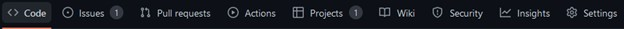This will redirect you to the main GitHub actions screen, and provide you with a catalogue of potentially helpful actions that you could add to your project. You can investigate these later though however, as for the purpose of this demonstration we are going to create our own GitHub action from scratch.
To do this click the “set up a workflow yourself” link that is visible at the top of the page.
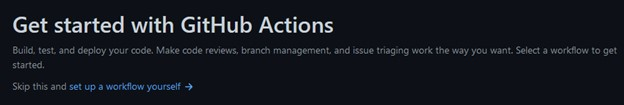This will then redirect you to the GitHub action creation menu, which includes a text editor that you can write your action in.
First of all, at the top of the window you can see it provides us with the file structure and name of our YAML file.
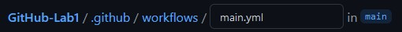You can rename this YAML file to something more bespoke if you would like, but as we are only including one in the file, we are creating we can leave this as main for now.
The empty text box on the left-hand side is where we can create our file.
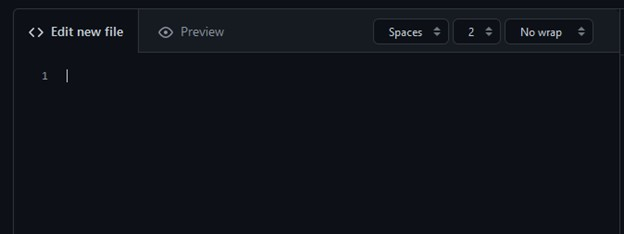For the sake of this demonstration, we are going to create a simple YAML that will create a Ubuntu virtual machine and load the program from our repository into it.
To do this we must first give a name to our YAML task. This can be achieved by writing the “name” command and then giving it a name of your choosing – I would suggest something like “My first YAML”.
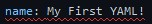You will notice we already have an error that has been represented by a red squiggly line underneath what has been written. If we hover over this error, it tells us that we are missing the required root key “on”. What this means is that we haven’t yet told our YAML file when it should run – so let’s do that now!
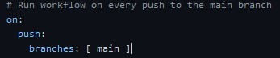Add the code above to your YAML file and you will notice that the error goes away. The code we have added is telling the YAML file a couple of things, the first is that we want it to run every time a push is completed to the repository – we have then taken this one step further and said we only want it to be ran when the branch being pushed to is the main branch.
There are many other examples and scenarios that you could use here – and feel free to research and test them - but for the purpose of this example this is all we need.
Now we know when we are going to run our action, we now need to tell it what we want it to do when it runs. To do this we are going to create a selection of jobs that need to be completed, we can do this by creating a command named jobs, write jobs followed by a colon underneath where you have set your workflow order.
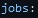After this we need to name our job, for the purpose of this demonstration we will call it “open-git-on-a-virtual-machine” to do this create two spaces underneath your “jobs section” and write the name followed by a colon.
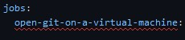You will notice once again that we have an error – this one is telling us that a job needs to either have a “runs on” or “uses” this is telling us that we need to create a VM that our job will use. So lets do that now; add a “runs-on:” command to your YAML and as we are running on Linux give it the argument to run on the latest version of ubuntu (ubuntu-latest)
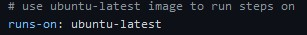This command will load up an Ubuntu virtual machine that we can then perform tasks on. The next step is to provide our virtual machine with the tasks we want it to complete. We do this by creating “steps”. Underneath where we created our virtual machine add a new command called steps (steps: )
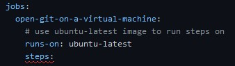Once again, we have been given an error this is because our steps can’t be null. We need to give it something to do! In this instance we are going to use the action provided by GitHub to load our repo into the virtual machine, you can do this by using the “uses:” command and providing it with the argument “actions/checkout@v2” – you should also place a hyphen before your uses command to show that it belongs to a list of commands.
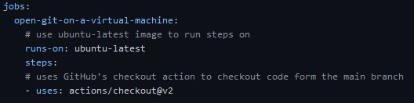And that’s it! You’ve written your first YAML – it doesn’t do much, but it does show the basics of how to use the system.
To add this YAML to your repo you must next press the start commit button located on the top right-hand side of the screen.
Give your YAML commit a suitable name and description and commit it to your repository.
Now we have the created the YAML file we need to see if our actions have completed successfully. Navigate back to the actions menu and you will see the screen has changed slightly, replaced with the action you created and should be accompanied by a green tick.
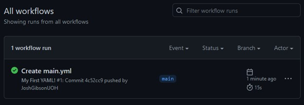This means your action successfully completed and none of the tasks within the YAML failed.
If you wish you can click into the action and get more information about its completion, including in depth debug information that will come in useful if you ever have a failure in the future.
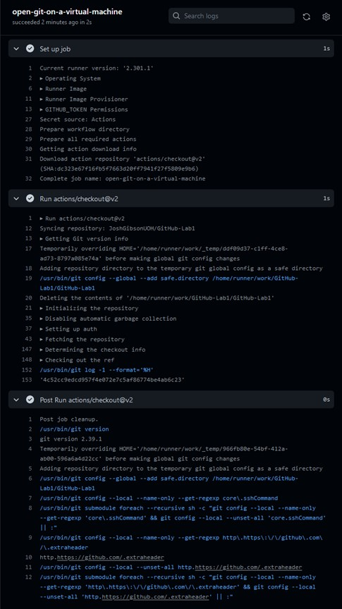There you have it; you have created your first YAML file! Feel free to do some more research and try and expand on what your action can do.